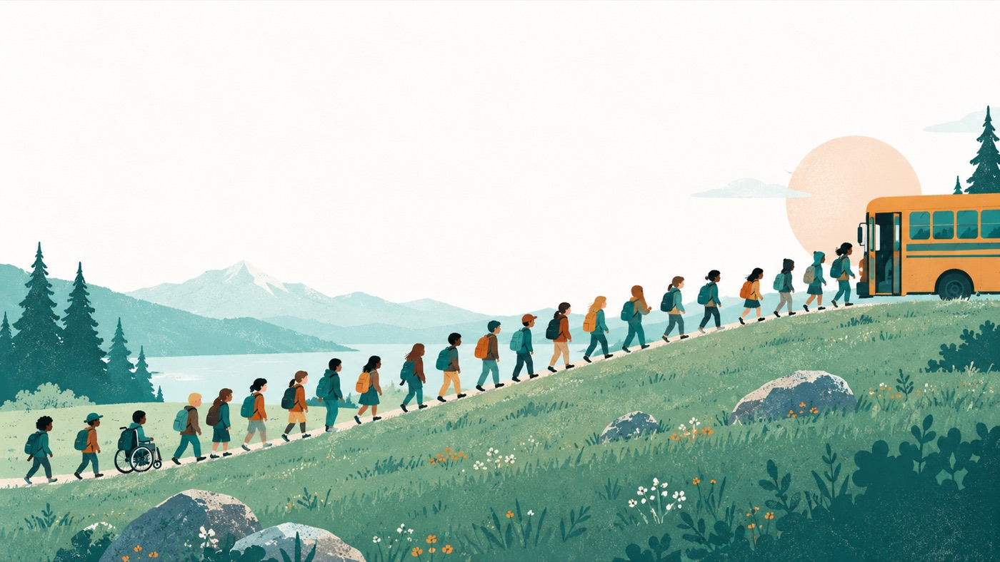

NÖMS Hirtenberg · Mappe für Familien
Eine kleine Mittelschule im Triestingtal, in der man einander kennt. Hier finden Sie alles, was Sie vor, während und nach Ihrem Besuch bei uns brauchen.
Sie haben diese Karte bei der Ideenbörse bekommen? Hier geht es zur Erasmus-Mappe für Schulen.
Kommen Sie mit Ihrem Kind vorbei, schauen Sie in die Klassen, hören Sie die Bläserklasse und stellen Sie alle Fragen, die Sie haben. Eine Anmeldung ist nicht nötig.
[[Datum und Uhrzeit bestätigen. Der 14.11. stammt von einer alten Demo-Seite. Anpassen nur in den data-Attributen dieses Abschnitts und in der Zeile darüber.]]
Schön, dass Sie hier sind. Schauen Sie sich in Ruhe um, alle Türen sind offen und jede Lehrerin und jeder Lehrer beantwortet gern Ihre Fragen.
[[Programm am Tag: Stationen mit Raum, Uhrzeiten der Auftritte, z. B. „15:00 Bläserklasse im Turnsaal“]]
Für die Kinder gibt es weiter unten einen eigenen Teil: Für dich.
Den Tag der offenen Tür verpasst? Kein Problem. Wir zeigen Ihnen und Ihrem Kind die Schule auch gern an einem normalen Schultag. So sehen Sie gleich, wie es bei uns wirklich zugeht.
Mit 120 Kindern sind wir eine kleine Schule. Das heißt: Man kennt einander, vom Direktionszimmer bis zur letzten Bank. Kein Kind geht bei uns unter.
Wie ernst wir das meinen, zeigt unser Erasmus-Projekt. Bei Auslandsfahrten fahren üblicherweise die Besten oder die, deren Eltern es sich leisten können. Bei uns sind alle Kinder nach Italien gefahren, auch die, die besonders viel Unterstützung brauchen. Geplant haben wir die Reise vom Kind aus, das es am schwersten hat.

Neben dem Lehrplan gibt es sechs Bereiche, in denen wir mehr machen als üblich.
Jedes Kind lernt ein Blasinstrument, vom ersten Ton bis zum Konzert. Gemeinsam mit der Musikschule.
Singen, Schauspiel und Tanz im Darstellenden Spiel. Einmal im Jahr auf der großen Bühne vor vollem Haus.
Gesunde Jause, Hochbeete im Schulgarten und viel Bewegung im Freien.
Ein eigenes Fach: digitale Werkzeuge sinnvoll nutzen und sicher im Netz unterwegs sein.
Schulbibliothek, Lesestunden und Lesepatenschaften. Wer gern liest, lernt leichter.
Ab der 3. Klasse: Schnuppertage, Betriebsbesuche und Begleitung beim nächsten Schritt.
[[Bitte prüfen: Die Texte stammen aus dem Entwurf der großen Schulseite. Stimmen Bläserklasse mit Musikschule, das jährliche Musical und Berufsorientierung ab der 3. Klasse so?]]
Du kommst bald von der Volksschule zu uns? Dann hast du sicher Fragen. Wir haben unsere Schülerinnen und Schüler gefragt, was sie damals wissen wollten. Hier sind ihre Antworten.
[[Antwort eines Kindes aus der 1. oder 2. Klasse, ohne Namen]]
[[Antwort eines Kindes]]
[[Antwort eines Kindes aus der Bläserklasse]]
[[Antwort eines Kindes]]
[[Antwort eines Kindes]]
Am Tag der offenen Tür oder bei einem Schnuppertermin, den Sie mit uns ausmachen.
Die Anmeldung für das Schuljahr 2027/28 ist von [[Zeitraum]] im Sekretariat möglich. Bitte bringen Sie mit:
Sie bekommen eine Bestätigung. Im Frühjahr erfahren Sie, in welche Klasse Ihr Kind kommt und ob es in der Bläserklasse ist.
Die ersten Tage sind zum Ankommen da: Schulhaus erkunden, die Klasse kennenlernen, ohne Druck.
[[Antwort]]
[[Buslinien und Haltestellen im Triestingtal, Gehweg vom Bahnhof]]
[[Antwort]]
[[Antwort]]
[[Antwort, z. B. Geräteinitiative]]
[[Antwort: Förderung, Kleingruppen, Sonderpädagogik]]
[[Antwort: Mitteilungsheft, SchoolFox, Elternabende, Sprechstunden]]
Sie möchten einen Schnuppertermin ausmachen oder haben eine Frage? Wir melden uns.